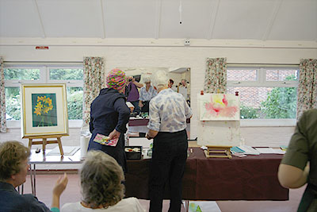

Click here to return to programme page
2018
An Italianate Scene in Watercolour by Paul Witton
Despite a temporary change of venue to the Church Hall, the session was reasonably well attended, including 9 guests.
Paul is a local artist who paints with the Arundel Art Society. It is clear that he is passionate about loose watercolour painting, and cited Jack Merriott as a major influence. “Big paper, big brushes and confidence” was a phrase he used often.
Paul offered the choice of two different paintings, Turf Lock or an Italianate scene. The latter was selected and he started to work on an intial pencil drawing, with no other reference than his memory and imagination.
He was using mainly M. Graham and Co. tube watercolour paints, a size 16 sable brush and 300 gsm Bockingford paper. The paper had been stretched using a system called the Perfect Paper Stretcher. This clearly fascinated many of those present. No more sticky brown tape!
Paul summarised his technique as working big to small, light to dark and avoid fiddling with small brushes. He prefers to use granular colours rather than those that stain and it was fascinating to see the colours blending on the paper.
Members and guests alike fully engaged with the demonstration and gathered around to watch Paul at work. Paul took care to explain at every stage what he was doing. One of the more unusual phrases was “chuck some dark watercolour on and see what happens”.
After the break, Paul started work on “the small” - the figures and details in the masonry. The figures were rendered with the same large sable brush, as were the details in the stone-work. When he framed the finished work with a mount after less than 2 hours, everyone present was impressed by what had been achieved in a very short time.
Using Brusho – an interactive session with Lindsey Pearson
This demonstration faced a few early challenges. Network Rail closed the railway crossing and FIFA held the opening games in the World Cup. Despite this our valiant demonstrator made it through and a small and enthusiastic group of members and guests was treated to a very entertaining and informative afternoon.
Lindsey started off with an interactive warm-up session. Everyone had the chance to draw an item in pencil. The items included asparagus, pine cones and foliage. The only constraint was that you could not look at the pencil or paper at any time – only the item being drawn. After a couple of goes at the first item, everyone swapped to a different item. Lindsey explained that it was also a useful exercise to provide inspiration for new paintings and showed us some examples of work she had developed following this exercise.
Lindsey explained the advantages of Brusho, aka Earth Inks, as well as the pitfalls and dangers. Information sheets were handed out to back up her practical explanation of how to mix and store the medium. She the went on to demonstrate the initial stages of a painting including drawing in ink or brusho using wooden kebab sticks and wooden stirers from Costa Coffee (other brands are available).
During the break members were able to talk with Lindsey and inspect the materials in use, as well as the work completed.

After the break Lindsey continued to demonstrate various techniques including wet in wet, and developing a painting from an initial abstract pattern.

She then showed various examples of her completed work and talked through the many techniques used to develop them. Finally she asked for questions and judging by the number and range raised it was clear that the audience had remained thoroughly engaged throughout.
Lindsey has promised to visit our exhibition in August. It would be great if there are some works in Brusho included!
A Workshop with Dave White
Members and guests of the Society enjoyed a special day with Dave White leading the workshop "Creating a Seascape" in acrylics. We met in St Andrew’s Church Centre, comfortably shielded from the snowy scene unfolding outside!
Dave set the scene, explaining the use of support & canvas versus paper, types of brushes, and a chosen selection of artists acrylic paints - including Hookers Green, Ultramarine Blue, Burnt Sienna, Titanium White, Cadmium Yellow and Red. We also covered the use of the colour chart and identifying complementary colours which make for an interesting composition.
Dave explained the importance of establishing a vanishing point and sectioning canvas in thirds using chalk. Various techniques were explained such as painting realistic clouds, and identifying where movement and light influenced the composition. We learnt to portray foam by splattering white paint.

By the end of the day everyone felt more confident with the techniques, and Dave offered advice to those who had sketches/ideas so that they could progress further at home.
Barnstorming Joe Dowden
Local artist - and window-cleaner! - Joe Dowden provided a quip-filled afternoon for our large audience. Working on a large scale for watercolour he started by showing how he marked out his drawing on an overlay paper... which he attached to the actual drawing so he could "refind" marks as the painting progressed.
Soon Joe was down to work... literally as much of the time had to be spent with the paper "on the flat".
When we could not see what was being done, Joe ensured we knew his colour and brush choices. If Joe has one mantra, it is that watercolourists should not be so constrained by tradition. "Break the rules" was a repetitive suggestion. Joe uses - and recommends - a camera tripod to hold his work rather than an easel. This allowed him to unclip the painting quickly and show progress to us.
Throughout the demo, Joe entertained us with stories ... some of them even related to art! Importantly, he encouraged us to seek out the work of relatively unknown artists in Britain from the old USSR, China, Japan and USA. These people did not feel the need to adopt those traditions previously mentioned and could show how modern watercolour could be used.
Taking time to answer questions from the floor, Joe came to the point of unveiling what he had managed in something less than two hours - much to the appreciation of all those in the audience.
Our thanks to Joe, not just for a fine painting but such an entertaining afternoon.
Rick Holmes kicks off our new year
We were pleased to welcome pastel artist, Rick Holmes, on what was his first ever visit to Ferring. As a member of the Wapping Group, it was no surprise that he chose as his subject a Thames bridge ... how he went about it was more surprising. Working on pre-primed mountboard, he proceeded to apply dark acrylic inks with a roller! Next he used a credit-sized card to apply small marks of Chinese black ink to plot the key elements of his subject. Those watching were relieved when he said "Believe me, pastel will come"!

Rick prefers Unison soft pastels supported by Conte (square edge) and pastel pencils where more detail is required. He tends to blend only the sky areas and applies individual pastel marks across the rest of the painting. One reason for the ink/acrylic background is that this creates the "darks" against which the pastel tones can be best judged. Like so many pastel users, he had a bag load of broken pieces. However, as he chooses colours for the individual painting he keeps them on a separate tray. This helps to keep to a relatively limited palette and create a more harmonious design. Soon the image began to emerge...

Rick had no magical formula for painting ... neither light to dark nor vica versa. Rather, it was whatever seemed most appropriate. His aim was to create a "loose realistic" style, already evident in the emerging painting. When working from a photograph, Rick suggested the use of black and white images to help with tonal values while allowing the artist to be selective over colour choices. However, Rick is a regular outdoor painter and waxed lyrically on the benefits to be gained from regular "plein air" painting. His one caveat was to restrict time to about 2 hours as the sun's movement over a longer period could lead to problems.
With over 30 people attending, there were many questions throughout the demo all answered clearly by Rick aided by his gentle humorous style. To supplement today's painting, he had brought a wealth of previous work for all to enjoy and had time to share several fully-framed works ... wryly remarking that these were the onesnot selected for the latest Pastel Society Mall exhibition - though he does have one in there!

Our thanks to Rick for a super start to our 2018 demos. Don't forget you can see Rick in action again on Monday evening, 26th February at the Mall (painting alongside Roger Dellar and Geoff Hunt) as part of the Wapping Group exhibition at the Mall Gallery.